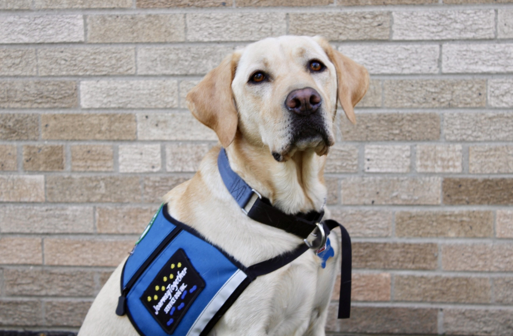

How Has the Foundation Affected the Community?
With help from its donors, the Oshkosh Area Community Foundation (OACF) has continued to provide vital resources to those in need. Let's look at a few examples of how your donation to the OACF can impact your community!
Gunther the Therapy Dog

Gunther has found a home at Solutions Recovery through the help of the OACF. His community support involves offering emotional support and comfort to those recovering from substance abuse or other traumatic events. Your donation makes it possible for service animals like Gunther to provide a bright and friendly presence to individuals who need it most. (Source: A Gentle Presence: How Gunther Builds Connection One Paw at a Time)
Feeding Those in Need

The Oshkosh Area Community Pantry (OACP) serves over 6,500 people in the Oshkosh area every single month. Although federal funding for the OACP was cut significantly, money from donors allowed the pantry to continue to operate and put fresh food in the hands of community members. This is just another example of how your donation could make a difference. (Source: Keeping Food on the Table)
Funding Education

Celebrate Education, a program run by the OACF since 2005, has offered at least $800,000 in grant funds to support education goals around the Oshkosh area. This year, 2026, the program is giving out $73,000 in grants to educators as well as awards to community leaders. Your donation provides important funding to school programs that help to improve the lives of students. (Source: Oshkosh Educators Receive $73,000 in Grant Awards at Celebrate Education)